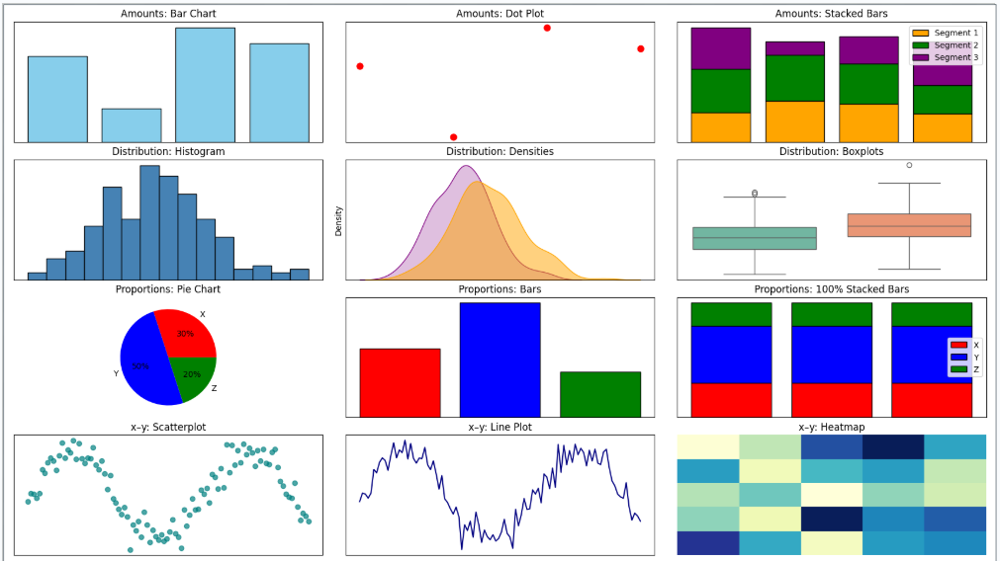
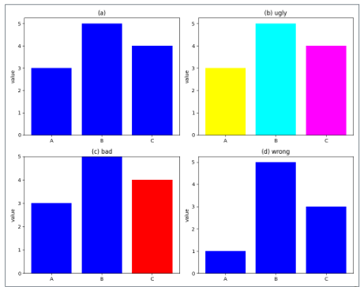
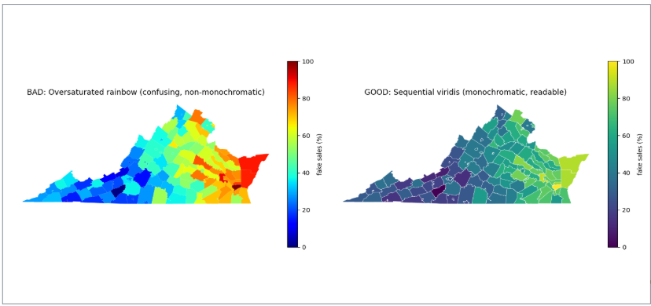
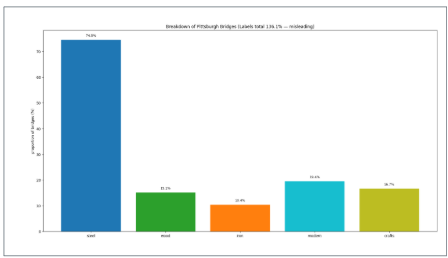
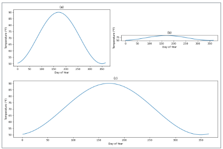
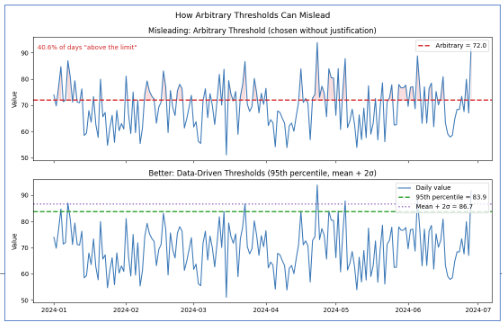
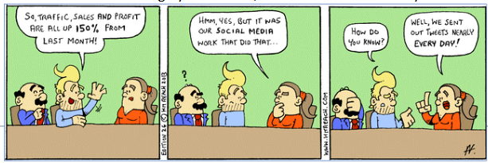
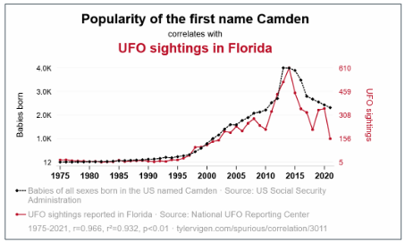

Human-centered Storytelling
- This section frames data visualization as human-centered storytelling: choosing visuals that are truthful, interpretable, and purposeful for a specific audience. Building on Wilke (2019), it links aesthetic choices (position, color, shape, size) to perception, then pairs them with sound research methods—distinguishing description, prediction, and explanation while avoiding common traps (bad proportions, misleading color scales, poor aspect ratios). You’ll learn to separate correlation from causation, surface confounds and subgroup effects, and recognize reasoning errors (cherry-picking, arbitrary thresholds, misreading axes). Finally, it introduces a practical storytelling workflow—Who/What/How → Big Idea → 3-minute story—so your graphics do more than decorate: they clarify decisions and drive action.
Reference:
Wilke, C. O. (2019). Fundamentals of Data Visualization.
O’Reilly Media. ISBN: 9781492031086.
Data Visualization and Why Good Research Methods Matter
Wilke (2019) suggests that data visualization combines both art and science.
It must accurately represent the data without misleading, while also being visually appealing.
Misrepresentation, like making unequal values appear similar, undermines the science.
Poor aesthetics, such as distracting colors or imbalanced design, can hinder interpretation and obscure the message.
Importance of Research Methods in Data Visualizations
Describe behavior
Identify trends, patterns, and outcomes in data.
Use visualizations to summarize patterns in a clear, audience-friendly way (e.g., bar charts of user activity).
Predict behavior
Use past data to anticipate future actions or outcomes.
Design visuals that highlight trends and forecasts, helping stakeholders make informed decisions (e.g., line charts showing sales projections).
Explain behavior
Go beyond correlation to investigate causal relationships.
Ground visualizations in methods that distinguish causation from correlation, avoiding misleading graphics (e.g., control vs. treatment comparison with appropriate labels).
Understand behavior
Build a deeper theoretical and contextual understanding of why patterns occur.
Use storytelling and layered visuals to provide context that clarifies motivations, environments, or external influences (e.g., dashboards that combine time, geography, and user type).

Aesthetics and Types of Data
Line Width: Lines ranging from thin to thick.
Line Type: Solid, dashed, dotted, and dash-dot styles.
Shape: Examples of circle, square, diamond, and triangle markers.
Size: Circles of increasing size.
Color: A palette of orange, blue, green, and yellow.
Position: A coordinate system with x and y axes.
Axes are perpendicular and evenly spaced.
Simple visualizations need data points placed in distinct locations.

Color in Data Viz
There are three fundamental use cases for color in data visualizations: we can use color to distinguish groups of data from each other, to represent data values, and to highlight.
Distinguish groups: Use color to separate categories without a natural order, like countries on a map or product brands.
Represent values: Use color scales to show quantitative data such as income, temperature, or speed.
Highlight: Use color to draw attention to key elements or categories that support the story.

Common Pitfalls of Color Use
Color is powerful but must be purposeful, clear, and non-distracting.
Poor color choices can obscure or distort data rather than illuminate it.
Encoding Too Much Information – Don’t assign unique colors to too many categories; use direct labeling or groupings instead.
Distracting Color Choices – Avoid coloring for decoration or using overly saturated hues that obscure the data.
- Example: rainbow-colored bars — visually striking but purposeless.
Misleading Color Scales – Don’t use nonmonotonic scales like rainbow, which distort value differences and emphasize arbitrary features.
- A monochromatic color scheme uses different shades, tints, or tones of a single hue, while a non-monochromatic color scheme uses multiple distinct hues.
Not Designing for Color-Vision Deficiency – Always choose color schemes that remain clear for color-blind viewers and test with simulators.
Red–green (deuteranomaly/deuteranopia, protanomaly/protanopia).
Blue–yellow (tritanomaly/tritanopia).
The Good, The Bad, The Ugly, and the Just Wrong
Ugly: A figure that has aesthetic problems but otherwise is clear and informative
Bad: A figure that has problems related to perception; it may be unclear, confusing, overly complicated, or deceiving
Wrong: A figure that has problems related to mathematics; it is objectively incorrect

Monochromatic vs Non-Monochromatic
Reference:
Data Source: U.S. Census Bureau. (2023). TIGER/Line Shapefiles: Counties (2023) [Shapefile].
U.S. Department of Commerce.
Available at: https://www.census.gov/geographies/mapping-files/time-series/geo/tiger-line-file.html

Bad Proportions (Pie)
The figure combines two variables:
Construction material (steel, wood, iron)
Date of construction (crafts = before 1870, modern = after 1940)
The chart is invalid because the percentages add up to more than 100%.
The issue arises from overlap between the two variables:
All modern bridges are made of steel.
Most crafts bridges are made of wood.

Reference:
Yoram Reich and Steven J. Fenves, via the UCI Machine Learning Repository
(Dua & Karra Taniskidou, 2017).
Bad Proportions (Bar)
Same data displayed as a bar plot instead of a pie chart.
Unlike the pie, this chart is not technically wrong because bar heights don’t have to add up to 100%.
However, it still fails to show overlap between groups (e.g., modern bridges are also steel, crafts are mostly wood).
For that reason, it is labeled “bad.”

To Make that Chart Better
Separate construction material and era of construction instead of mixing them.
Use a visualization that shows joint distributions or overlaps (e.g., grouped bar chart, stacked bar chart, or mosaic plot).
Make it clear that some categories overlap (e.g., most modern bridges are steel, most crafts bridges are wood).
Ensure percentages or proportions are mutually exclusive and add up properly within each grouping.
Helps viewers accurately understand relationships between material and construction period.
Reasoning Errors in Data Visualization
A paper by Schmidt et al. (2023) examines how individuals mislead with charts through strategies that go beyond visual distortions, focusing on logical and interpretive manipulations in data presentation.
Schmidt et al. (2023) collected 9,958 Twitter posts containing data visualizations related to the COVID-19 pandemic.
These posts were gathered to analyze real-world examples of how charts are used in online discourse.
The researchers then categorized and examined these posts for reasoning errors and misleading practices, focusing on arguments and interpretations rather than just visual design flaws.
This approach allowed them to study how misinformation spreads through otherwise well-designed charts in a large-scale, real-world dataset.
Reference:
Schmidt, A., Väänänen, K., Goyal, T., Kristensson, P. O., Peters, A., Mueller, S., Williamson, J. R., & Wilson, M. L. (Eds.). (2023).
Proceedings of the 2023 CHI Conference on Human Factors in Computing Systems.
Association for Computing Machinery.
https://doi.org/10.1145/3544548
Reasoning Errors (Schmidt et al., 2023)
- Reasoning Error: Commonly occurring logical attributes that can form the basis of a misleading argument
Misreading Charts– Drawing incorrect conclusions due to visual distortions or misinterpretation of chart elements.
Cherry-Picking– Selecting only certain data points so the conclusion fits the limited evidence, even though it wouldn’t hold with a more complete dataset.
Arbitrary Thresholds– Judging a phenomenon against a threshold that is chosen without clear justification, either as a number or a visual marker on a chart.
Data Quality Issues– Using data that may be incomplete, inconsistent, or uncertain, particularly during fast-changing situations, without communicating these limitations.
Ignoring Statistical Nuance– Overlooking key statistical details (e.g., comparing only one group in an experiment) to make an argument appear stronger than it is.
Misrepresenting Scientific Research– Misusing or oversimplifying scientific studies, which undermines public understanding and trust in science.
False Causal Claims– Inferring cause-and-effect relationships from visual patterns, often without proper evidence, which can be especially misleading when combined with cherry-picked data.
Misreading Charts: Coordinate Systems and Axes
Misreading charts refers to drawing incorrect conclusions due to visual distortions or misinterpretation of chart elements.
Data visualization requires position scales to determine where data values appear.
We want to choose an aspect ratio that ensures that any important differences in position are noticeable.

Cherry-Picking
Cherry-Picking– Selecting only certain data points so the conclusion fits the limited evidence, even though it wouldn’t hold with a more complete dataset.
Cherry-picking of the data points
Cherry-picking of the time frame

Arbitrary Thresholds
Arbitrary Thresholds– Judging a phenomenon against a threshold that is chosen without clear justification, either as a number or a visual marker on a chart.

Data Quality Issues
- Data Quality Issues– Using data that may be incomplete, inconsistent, or uncertain, particularly during fast-changing situations, without communicating these limitations.
- A notable example of data quality issues is the case of the COVID-19 dashboard developed by Johns Hopkins University. This dashboard became a critical tool for tracking the pandemic’s progression, but it faced significant challenges early on related to incomplete and inconsistent data reporting.
Misrepresenting Scientific Research
Scientific literacy is the ability to understand and evaluate scientific information well enough to make informed judgments, especially as a non-expert.
- Its goal is to help people cautiously trust science, striking a balance between blindly accepting all scientific claims and rejecting science entirely
Misrepresentation occurs when research findings are oversimplified, cherry-picked, or presented without proper context, leading non-experts to draw misleading conclusions.
- A scientifically literate audience is less likely to be misled because they can recognize when data are being exaggerated, causation is implied without evidence, or important nuances are ignored.
Ignoring Statistical Nuance
Ignoring Statistical Nuance– Overlooking key statistical details (e.g., comparing only one group in an experiment) to make an argument appear stronger than it is.
Subgroup differences – Variations in effects or outcomes across different categories within the population, such as age, sex, health status, or other demographic factors.
Ignoring these differences can oversimplify results, since the effect seen in the overall average may not apply to all subgroups.
Example: A new medication may lower blood pressure more in younger adults than older adults.
Causation vs. correlation – Correlation means two variables are related or move together, but it does not prove that one causes the other. Causation means a change in one variable directly produces a change in another.
- Observational studies can identify correlations but cannot reliably establish causation.
Confounding factors – Variables that are related to both the independent variable and the outcome that can create a misleading association.
- For example, if coffee drinkers also tend to exercise more, the longer lifespan might be due to exercise rather than coffee.
Correlation vs. Causation
Correlation is a standardized measure of the relationship between two variables, expressed in terms of covariance divided by the product of their standard deviations.
Measures linear relationship between two variables describing both the strength and direction of the linear relationship.
The correlation coefficient may not be a reliable measure in the presence of outliers.
Even if two variables are highly correlated, one does not necessarily cause the other.

Correlation vs. Causation
What do we need to determine causation?
Statistically significant relationship between the variables.
No other factors can account for the cause.
- Eliminate Confounds
Causal variable occurred prior to the other variable.
- We understand and have the correct directionality (X → Y).
Why are we tempted to interpret findings as causal?
Causal link seems obvious.
Have a pre-existing bias.
Interpretations dominated by theoretical orientation.

Confounding Variables and The Third Variable Problem
The Third Variable Problem
Definition: Any variable that is extraneous to the two variables being studied, which may influence or explain the observed relationship.
Also known as: Confounding variables
Spurious relationships: Apparent associations that are actually due to coincidence or the presence of a third, unseen factor (a confounding variable).
1975 Taiwan Study: Correlation between electrical appliance ownership and contraceptive use, influenced by socioeconomic status.
Early 1900s Pellagra in the Southern U.S.: Cases initially linked to diet, but ultimately explained by poor sanitation and nutrient deficiencies.
Read more here https://hbr.org/2015/06/beware-spurious-correlations
False Causal Claims
False causal claims refers to when someone interprets a visual pattern (or any correlation) as evidence of cause-and-effect without proper experimental or statistical support, they are making a false causal claim.
Cherry-picking exacerbates the issue: Selecting only data that fits a desired story can make the misleading visual pattern look more convincing, reinforcing the false causal inference.

The Directionality Problem
Directionality problem: In a correlation between two variables X and Y, it can be unclear which variable, if either, is causing the other.
- We need to understand Temporal Precedence to understand Causation.
The directionality problem is a common reason people make false causal claims. If you ignore which variable comes first—or whether a third variable explains the correlation—you may wrongly assert that one variable causes the other.
Happiness and Exercise
Physical Exercise and Self Esteem
Aggression and video games
Bias
Bias is closely related to false causal claims because it can distort the data or the interpretation of data, making a causal relationship appear stronger, weaker, or entirely different than it really is.
Sample Bias:
- i.e., Surveying only gym-goers to conclude that exercise increases happiness ignores people who exercise less but are happy.
Measurement Bias:
- i.e., Using self-reported exercise without verification may overestimate its effect on health outcomes.
Confirmation Bias: Researchers or communicators may focus on data that supports their expected causal story and ignore data that contradicts it.
- i.e., Highlighting only studies where coffee drinkers live longer, while ignoring studies showing no effect or harmful effects.
Publication Bias: Studies showing significant or “interesting” causal effects are more likely to be published, skewing the perceived evidence.
Story Telling with Data
Who, What, How Framework
Who: Know your audience—specificity matters
What: Define what they should know or do
How: Determine how data will support the message
The Big Idea & 3-Minute Story
Big Idea: A concise, complete sentence with stakes and point of view
3-Minute Story: Boil your message down for brief delivery
These force clarity and support human-centered understanding
Success in data storytelling begins before visualizing data.
Clarify purpose, audience, and message
Differentiate exploratory vs. explanatory analysis
Use explanatory: Focus on the two pearls, not the 100 oysters
- For example, using livedatatechnologies.com, we can analyze patterns in arrivals vs. departures over time
Reference: https://www.livedatatechnologies.com/account-tracking
Clarify purpose, audience, and message
Differentiate exploratory vs. explanatory analysis
Use explanatory: Focus on the two pearls, not the 100 oysters
- For example, using livedatatechnologies.com, we can analyze patterns in arrivals vs. departures over time

Understand the Context
Step 1: Understand the Context
- Analyze patterns in arrivals vs. departures over time
Step 2: Choose the Right Visual
- Time-series bar chart or line graph
Step 3: Eliminate Clutter
- Use minimal colors and direct labels
Step 4: Focus Attention
- Highlight remote-relevant roles or high-turnover functions
Step 5–6: Design & Tell a Story
- Annotate with observations (e.g., “Spike in departures from editorial roles”)